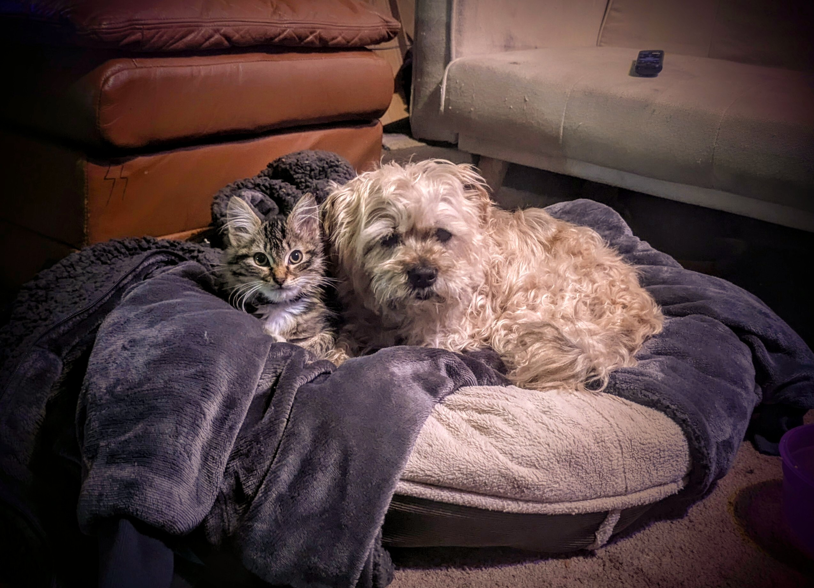

Adrianne Buckner is a vibrant young lady from Kingston, Washington. She enjoys gambling and spending quality time with her friend Steve. Adrianne’s life is made even more special by her adorable pets, Annie and Thomas.
Here are Adrianne's loyal companions:

Annie is a sweet little dog, and Thomas is a playful cat. They share a strong bond and love spending time together.